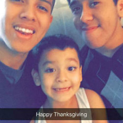

| This is a picture of me and my little brother Gabrielle who attended my high school graduation. He's a very shy little kid so he can get kind of awkward when he socializes with others, however, this kid has a bigger heart than anyone else I know. He always puts others in front of him and whenever somebody needs a helping hand, he's always there. It was honestly a great memory of mine to share an accomplishment like this with the rest of my friends and family. | |
| This is a picture of me and a couple of my bestfriends. I was not able to take a picture with all three of my bestfriends at the moment however the general memory was very special to me. I've been friends with these guys for years and it has been a blessing to have them in my life. This was a time when my Chinese friend and I decided to do something new for our last year in high school so we decided to join the Indian Cultural Club. I made a lot of new friends here and experienced a lot of new foreign things. I also got more in touch with other people's culture which gave me a sense of appreciation and respect for it. | |
| Last summer my family decided to go down to Florida to visit my cousins after three years! We did a whole lot of adventures in Florida considering we were only there for about 5 days. My two cousins Marielle and Marianne are incredibly smart. In fact, the younger and shorter one, Marianne, is in the top 5 of her high school class. Marielle is a very mellow and funny girl. She once worked at sea world as an amusment ride operator. My cousins really wanted to take us to Universal Studios so we went and it was amazing! All the attractions and fun places to visit really made the trip even better. | |
| The little crazy looking guy on the bottom is my baby cousin Daniel. He is in fact just like my aunt in the sense of how energetic and wild he is. Nonetheless, I simply adore this kid. I remember back when I was 14 and my aunt told me she was having a baby. I remember holding him in my arms and swinging him around the room pretending he's Superman. I remember how quiet and content he was when he was given his milk. It's crazy how time sure does fly and now I see this kid no longer crawling but running around the house endlessly. I wish I had energy like that nowadays. |  |
| This is a picture of my sister in her natural habitat. Her natural habitat is basically anywhere but New Jersey. She is what most people call a peripatetic. She loves traveling and this picture she's enjoying her meal in a sunny and beautiful place called Brazil. She's been to multiple other places, such as, Italy, Spain, Costa Rica, Cancun, Philippines, England, Ireland, and many more. It still boggles my mind how she has so much money for these trips. She also watches lots of airplane accident documentaries which freak her out yet she still ends up on a plane to the next exotic country. She can be a pain, she can be really crazy, she can be such a brat sometimes yet everytime she leaves I miss her because she's my sister. |